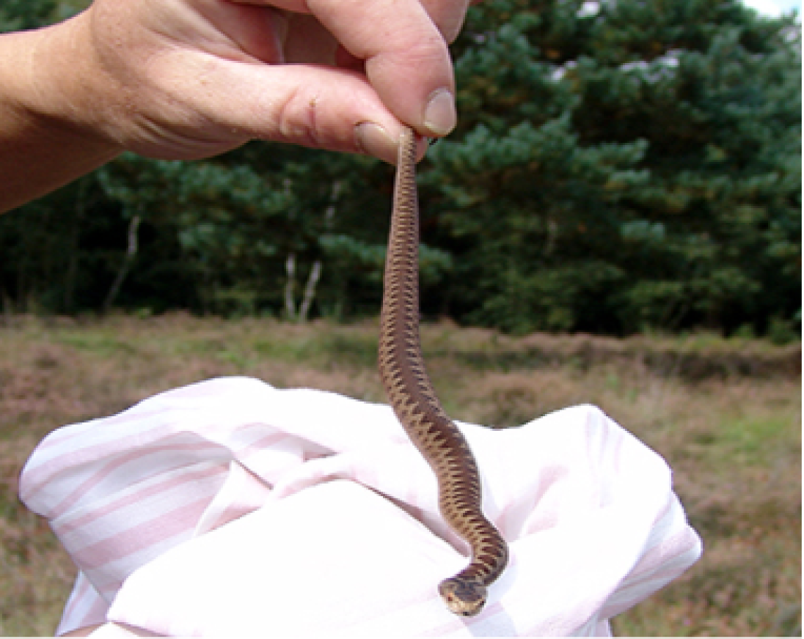

Vipera berus
, the common European adder or commonEuropean viper is a venomous snake that can be found throughout most of Western Europe. The Vipera berus is found in different terrains, habitat complexity being essential for different aspects of itsbehavior. It feeds on small mammals, birds, lizards, and amphibians, and in some cases on spiders, worms, and insects. Like most other vipers, is ovoviviparous and females breed once every two or three years, with litters usually being born in late summer to early autumn in the Northern Hemisphere. Adults grow to a total length (including tail) of 60 to 90 cm and a mass of 50 to 180 grow.
Description
The Vipera berus is easily identified by the dark zigzag line passing along the back bordered by rows of spots, by the dark mark whichtakes the form of an 'X' 'V' or 'H' located on the rear of the angular head and the vertical pupils. Males are greyish, whitish, pale yellow or cream in colour with very dark contrasting markings, whereas females are typically a brownish or reddish colour with brown markings. Females also tend to be longer and widerthan males, and have shorter tails. Male and female juveniles are reddish in colour. In all cases, the bellyisgrey, greyish-brown or bluish, and the throat is dirty yellow or white.
Size Averageadultlength: up to 65 cm[5] 